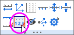

2Dベクトルグラフ
Vector-Graph
サマリー
ベクトルプロットは、気象学、航空学、研究、建築のような産業分野で、流れのパターン(例：風、水、磁界など)を示すのに使われています。方向と大きさの両方がベクトルグラフで表すことができます。Originには、次の2種類のベクトルグラフがあります。
- XYAM型ベクトル - ベクトルの開始点(デフォルト)となるXY位置、角度、大きさ
- XYXY型ベクトル - 2点のXY位置をベクトルで結ぶ
学習する項目
このチュートリアルでは、以下の項目について解説します。
- ベクトルグラフをプロットする2つのデータ統合モード
- プロットデータを割り当てるプロットセットアップを使う
ステップ
このチュートリアルは、チュートリアルデータプロジェクト（<Origin EXE Folder>\Samples\Tutorial
Data.opj）と関連しています。
また、ラーニングセンターからこのグラフを呼び出すことができます。(ヘルプ：ラーニングセンターメニューを選択、または キーボードのF11
キーを押して、グラフサンプル：特殊グラフを選択します)
ベクトルプロットを作成するには、4つのデータ列が必要で、データを2つのモードで統合します。
XYAM型ベクトル
XYAMは、X, Y, 角度、大きさを表します。ベクトルは、開始点 (X, Y)と指定した角度を回転します。次のサンプルは、XYAMデータモードを使用し、ベクトルグラフを作成します。
- Tutorial Data.opju を開き、プロジェクトエクスプローラで2D
Vector フォルダを開きます。
- ワークシートBook8Eを開きます。列を選択せずに、メニューから作図：特殊グラフ：XYAM型ベクトルと操作して作図のセットアップを開きます。下図のように、現在のワークブックを選択後、列A,
B, D, CをそれぞれX, Y, A, Mを割り当て、OK をクリックしてグラフを作成します。
 |
作図のセットアップダイアログで3つのパネルを全ての表示するために ボタンをクリックしてグラフタイプパネルを開き、再度をクリックして利用可能なデータパネルを開きます。 ボタンをクリックしてグラフタイプパネルを開き、再度をクリックして利用可能なデータパネルを開きます。
詳細な情報は作図のセットアップで作図を参照してください。
|
- フォーマット：作図の詳細（プロット）を選択し、作図の詳細ダイアログのプロット属性に行きます。ベクトルタブを開き、ベクトルデータグループの倍率を75
に変更します。OKをクリックして、作図の詳細ダイアログボックスを閉じます。
- 左軸をクリックしてミニツールバーを表示させ、反対側の軸を表示ボタンをクリックします。下軸をクリックしてミニツールバーを表示させ、反対側の軸を表示ボタンをクリックします。
- 右軸をクリックしてミニツールバーを表示させ、目盛ラベルを表示ボタンをクリックします。上軸をクリックしてミニツールバーを表示させ、目盛ラベルを表示ボタンをクリックします。
- 
- 右軸をクリックしてミニツールバーを表示させ、目盛のスタイルボタンをクリックし、外側を選択します。上軸をクリックしてミニツールバーを表示させ、目盛のスタイルボタンをクリックし、外側を選択します。
- 凡例を右クリックし、コンテキストメニューを開きます。プロパティ...を選択し、テキストオブジェクトダイアログを開きます。テキストボックスに
\l(1) Field Strengthと入力し、OKボタンをクリックします。
- テキストツールボタンを用いて、グラフにタイトルとしてSpot Write Effectivenessと追加します。
XYXY型ベクトル
もう1つのデータ統合モードは、XYXYで、これは最初のXYが開始点、後のXYが終了点です。
このようなベクトルグラフを作成するには、
- 2D VectorフォルダのワークブックBook9Eをアクティブにします。C列をクリックしてミニツールバーを表示させ、Xとして設定ボタンをクリックします。
- 4つのデータ列すべてを選択し、メインメニューから作図：特殊グラフ：XYXY型ベクトルと選択します。